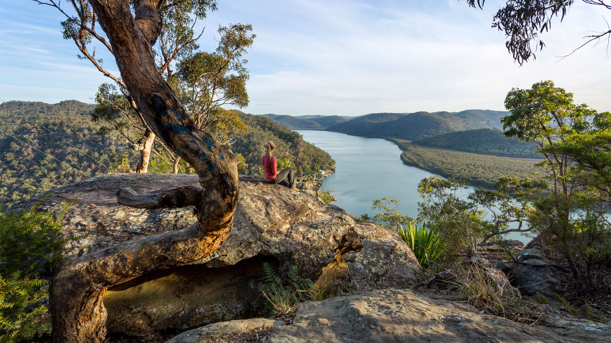
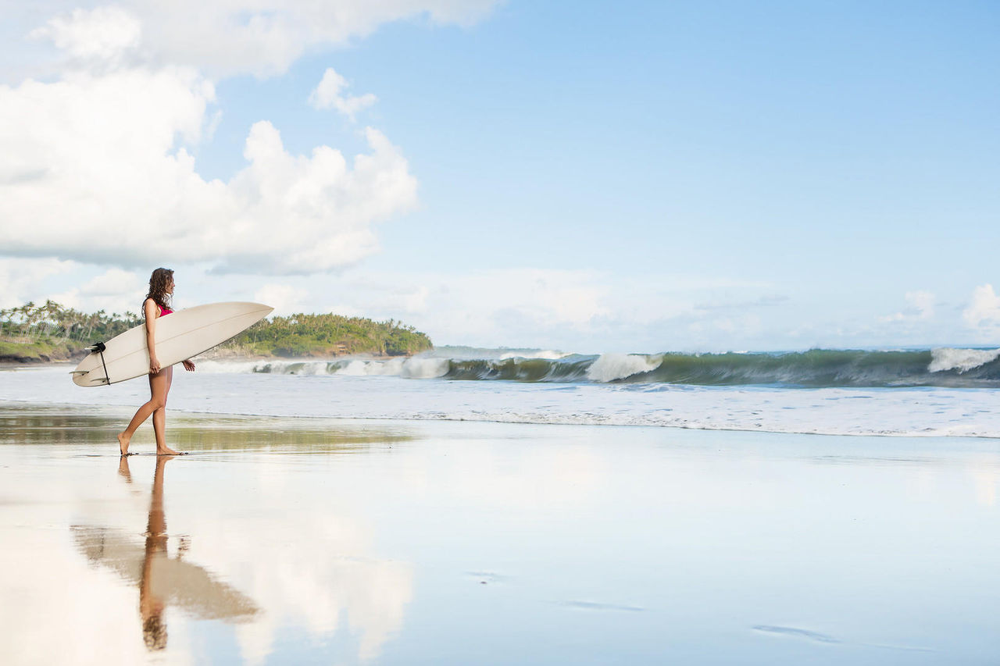

WKND Adventures
Join us on one of our next adventures. Browse our list of curated experiences and sign up for one when you're ready to explore with us.

San Diego Surf Spots
From the hippie beaches of Ocean Beach to the ritzy shores of La Jolla and everywhere in between. Discover the San Diego surf scene.

Downhill Skiing Wyoming
A skiers paradise far from crowds and close to nature with terrain so vast it appears uncharted.
![The Lennard River carves a stunning canyon through the Napier Range at Windjana Gorge, Kimberley Region, Western Australia. The permanent pools in the river provide a permanent habitat for dozens of freshwater crocodiles. Rudyards Kipling's story "The Elephant Child," comes to mind every time I visit Windjana Gorge in the Kimberley, when the Elephant child says: "and still I want to know what the Crocodile has for dinner!'Then Kolokolo Bird said, with a mournful cry, 'Go to the banks of the great grey-green, greasy Limpopo River, all set about with fever-trees, and find out."At Windana Gorge the green waters of the gorge pools are filled with Johnston crocodiles floating in the tepid green waters or resting on the hot sand banks.They add a real air of wild Australia below the complex and colourful ramparts of the Gorge where the Leonard River flows through the ancient Devonian reefs.The history of the renegade aboriginal tracker Jandamarra who hid in caves in this gorge and the screeching of the galahs circling overhead and wheeling about amongst the crags further adds to the primeval atmosphere of this special place in Australia.](./images/7127477308ad48f1551c4b916ed440b0.jpg "The Lennard River")